My notes from trying 5 of them.
I added "oranges" and "spinach" to my OurGroceries list, hit the ‘Shop on Instacart’ button, and got canned mandarin oranges and pre-cut frozen spinach in my cart.
I've been trying out different shopping list apps like AnyList, OurGroceries, Cozi, Flipp, and a tiny progressive web app called GroceryGo. What I expected to find was a feature gap. What I actually found was five apps that are each good at one moment in the shopping loop and are indifferent to the other three, and the moment each one picks is almost predicted by how it makes money.
The loop has four moments
Every grocery trip runs through the same four key steps:
| Moment | What the user is doing | What good looks like |
|---|---|---|
| Capture | Adding “paper towels” while walking out of the bathroom | Under 2 seconds, one hand, no thinking |
| Plan | Deciding what to cook and where to buy it | Recipe → ingredients, items → stores |
| Aisle | Standing in front of the shelf | Sorted by aisle, readable at arm's length, live-synced |
| After | Realizing you spend $180 again | What it cost, vs what you expected |
Now map the apps:
| App | Owns | Ignores or paywalls |
|---|---|---|
| AnyList | Plan (best recipe import in the category) | Aisle (store filter is paid), After (price + running total is paid) |
| OurGroceries | Capture (fastest sync I tested; barcode, voice, and photo entry all free) | Plan (no store field at all), After (no price tracking, period) |
| Cozi | The household, not the trip | Everything trip-specific — no prices, no barcode, no store filter |
| Flipp | Pre-trip deal discovery | Capture and Aisle both; the list is a coupon-clipping surface wearing a list costume |
| GroceryGo | Pantry state (inventory → plan → shop) | Distribution. Google-only login, no sharing, no barcode |
Not one of them covers three.
What Each App Offers
This was the most useful thing I did, and it took twenty minutes.
AnyList
$9.99/yr individual · $14.99/yr household
What's behind the wall: meal planning, unlimited recipe import, price entry, per-store filtering, web access. What's free: the list itself, autocomplete, aisle sorting, sharing, importing and creating recipes, no ads. This means that anyone who just wants a list and a running total is being asked to pay for a meal planner they won't open.
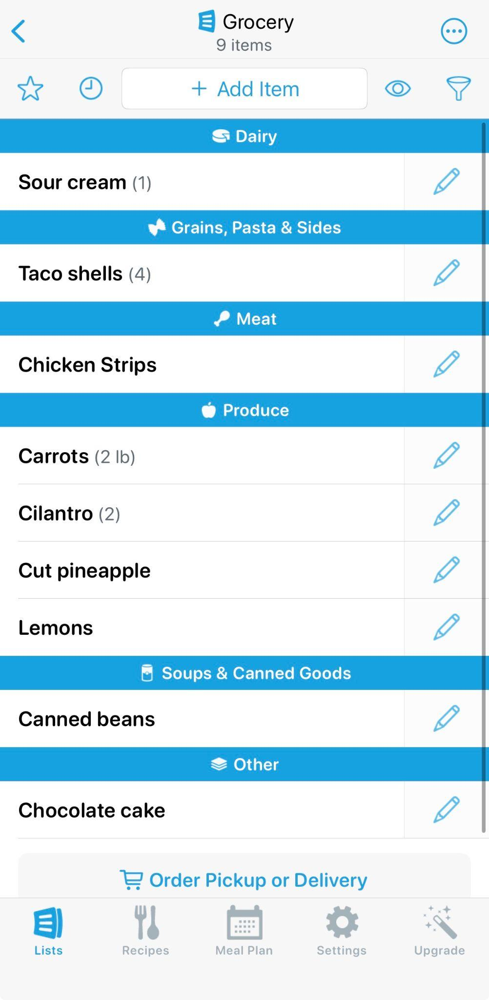
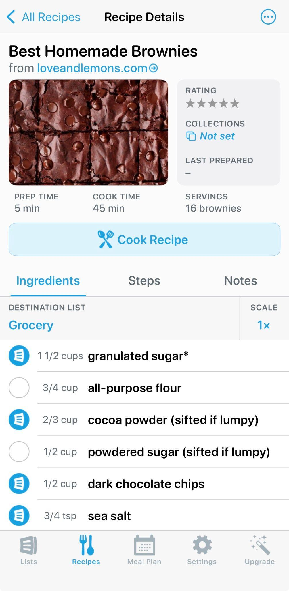
Free aisle sorting and free recipe import — the two halves of Plan, done well.
OurGroceries
$0.99/mo · $5.99/yr · $19.99 once
All you get is ad removal. Every actual feature is free. The app allows a user to create a list, scan an item, or import their list into Instacart to order their groceries online.
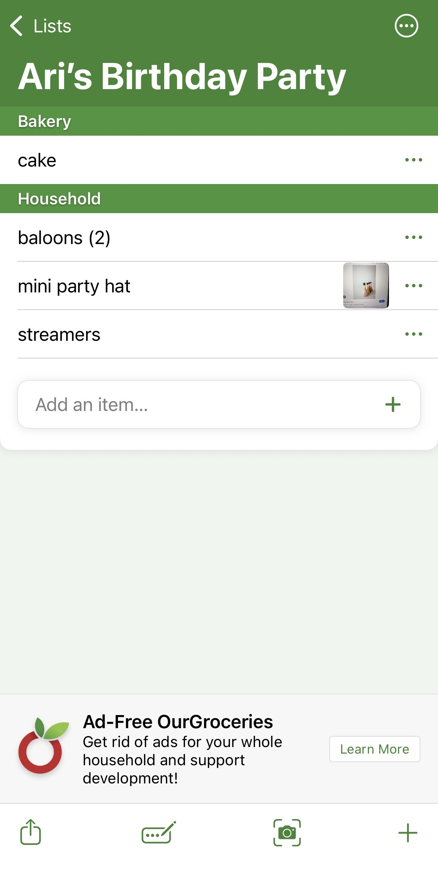
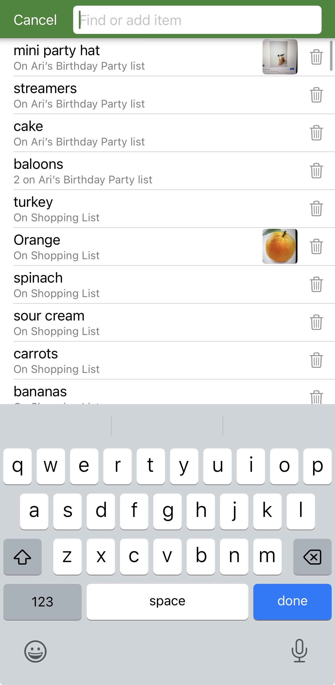
The add-item screen is the whole product: type, tap, done, across every list at once.
Cozi
$39/yr Gold · $79.99/yr Max
Cozi is marketed as more of a family organizer than a grocery list. For free, you are able to enter an event like ‘Grocery shopping’ and members of your family, create a list, or generate meals. If you pay, you are able to schedule events 30+ days in advance, create meal plans with AI, and remove ads.
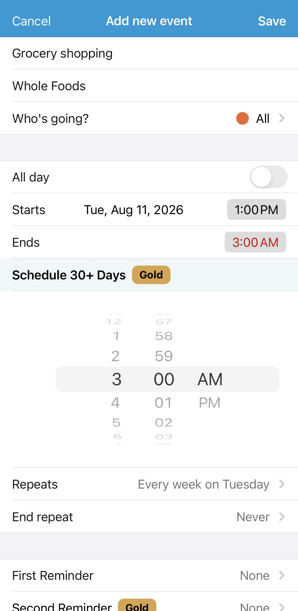
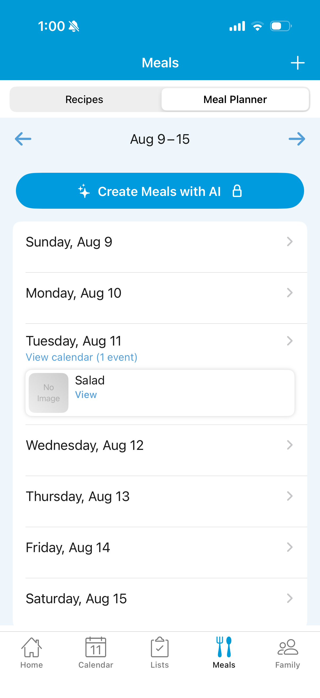
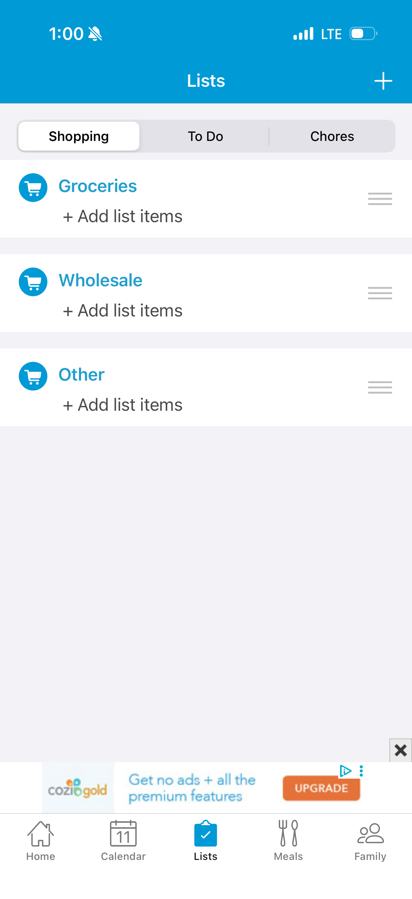
Cozi can charge $39 because it's holding the family calendar hostage. After May 2024, free users can only see 30 days out, which broke a decade of habit and dropped their Trustpilot average to about 2.1 stars. People paid anyway. A standalone list app tops out around $15/yr. If you want more, you either attach to something the household already pays for, or you stop charging users entirely.
GroceryGo
No paid tier
GroceryGo is in my opinion the worst of all the five apps I tried. It's a progressive web app, so I tried out the web version. As opposed to having a database of common grocery items, GroceryGo makes you enter in every single item you want in your ‘inventory’ section and then add it into a list. There is no paid tier, so the only real features are creating a static list, which you can do in your phone's notes app.
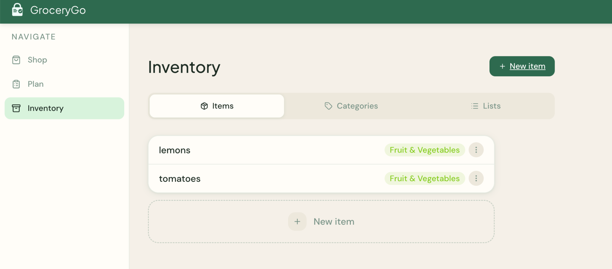
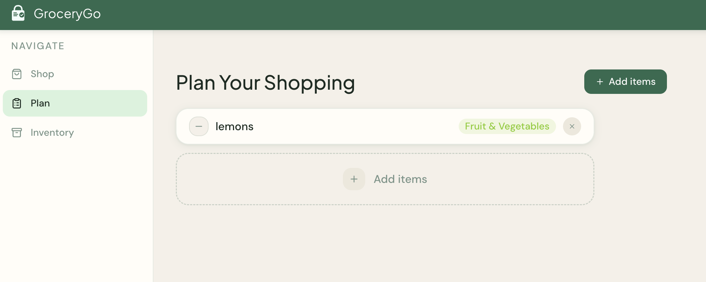
Every item is hand-entered into Inventory before it can reach a list.
Flipp
Free, no premium tier
Retailers pay for placement, for targeting and analytics, for hosted flyer software on their own sites, and under a NativeX model where the retailer only pays when a shopper actually reads the ad. In March 2026 they brought in third-party measurement to tie campaigns to incremental sales. Flipp is not a shopping app with ads in it. It's an ad network with a shopping app as the acquisition channel.
Which is why Flipp can't add Whole Foods or Trader Joe's. Those chains don't publish weekly circulars, so there is literally nothing to ingest. Flipp's coverage is a function of its supply side, and its supply side is print advertising's legacy. Your users experience that as "why isn't my store here."
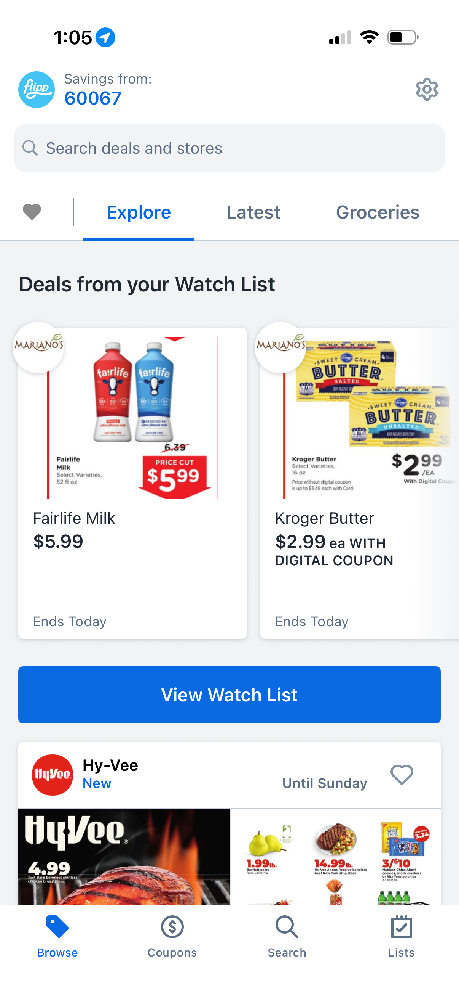
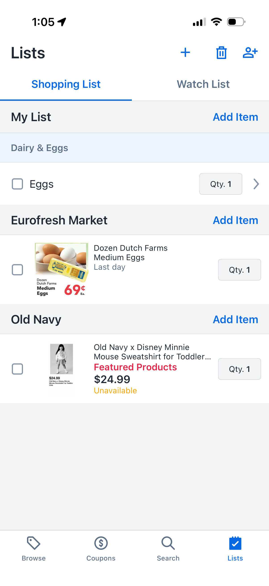
The list is grouped by retailer, not by aisle — the tell that it serves the flyer, not the trip.
Three things that separate the good apps from the bad ones
1. Friction is denominated in taps, and capture is where you lose people.
My single loudest complaint about AnyList is embarrassingly small: you add an item, then have to tap it again to change the quantity. Two taps instead of one, maybe forty times a week. That's the difference between an app you use and an app you have.
The correct frame is that capture is the retention gate. It's the only moment that happens ten times a week instead of once. Every other feature, like recipes, meal plans, and deal alerts, is downstream of the user having bothered to put things in the list at all. A successful and easy-to-use app will optimize the boring thing.
2. Features that only work on the happy path teach users where your product ends.
AnyList's autocomplete is great on grocery lists and absent on everything else. Type "ballo" on a party supplies list and it suggests nothing. This makes the user think that this is a grocery app, and my other lists are second-class here. Then they open Notes for the party stuff, and now you've split their behavior across two apps.
3. When every competitor paywalls the same feature, ask whether it's greed or difficulty.
Price entry and running totals: paywalled by AnyList, absent from Cozi, and on OurGroceries' public FAQ as a long-requested feature they haven't built. The reason is this. There are only three ways to accomplish this:
- Manual entry. Free to build, and users will do it for two weeks and then stop.
- Receipt scanning / OCR. Real work, tells you what you spent but only after the fact.
- Retailer data. Best experience, requires partnerships or scraping, and gets you the coverage problem Flipp has.
A gap that persists across four independent teams is usually a hard problem.
Features nobody has built
The exit check
Every location-aware app fires on arrival, like "you're at Jewel Osco, here's your list." But not one fires on departure: "you're leaving, and eggs, butter, and coffee are unchecked."
Aisle order the app learns instead of asks for
The order you check items off is your store's layout and a free training signal every app already collects and throws away.
Pantry state derived from cadence, never entered
Milk appears every nine days, it's day twelve, suggest it. Zero user input, fully derivable from list history, and it's the only feature here that makes the app better the longer you use it.
None of these three are hard. They're unbuilt because every team in this category optimizes the moment its revenue depends on, and no revenue model in grocery lists points at the aisle.
The gap isn't technical, it's who's paying.